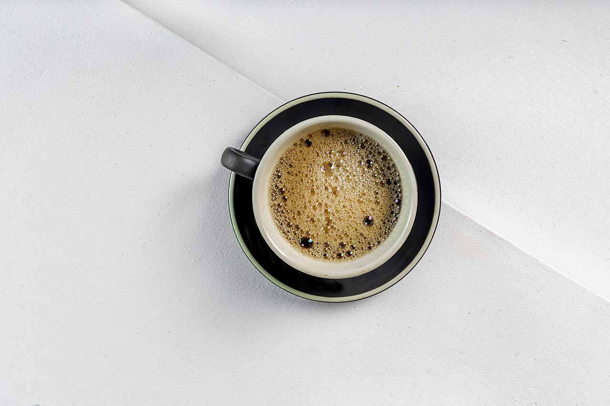

制作側の連想
ハンディファンを、配置図にしてみる
このサイトは、手に持つ小さな扇風機(ハンディファン)を正面から描き、六つの部位に番号をふって並べた図を飾りにして作りました。制作側の連想で、お店の理念・由来とは無関係です。実際の製品の仕様を示すものでもありません。
凡例
六つの部位
- 1ガード前面をおおう、羽根に指が触れないための網。
- 2ブレード中心から放射状に広がる、風を起こす羽根。
- 3モーター部羽根の中心に収まる、回す力を生む部分。
- 4スイッチ持ち手の上にある、入り切りや風量を切り替えるボタン。
- 5グリップ手に持つための、すらりと伸びた持ち手。
- 6充電ポート持ち手の下端にある、ケーブルをつなぐ差し込み口。
ギャラリー(イメージ)
カフェの一杯とパンの写真




写真はカフェのイメージです。お店のものではなく、お店で提供している商品を示すものでもありません。
ご案内
お店のこと(確認できたものだけ)
| 所在地 | 〒371-0823 群馬県前橋市川曲町２０−６ |
|---|---|
| 電話 | 準備中 |
| 営業時間 | 準備中 |
| 定休日 | 準備中 |
| ご予約 | 準備中 |
| 駐車場 | 準備中 |
| SNS | Instagram @hanadancafe |